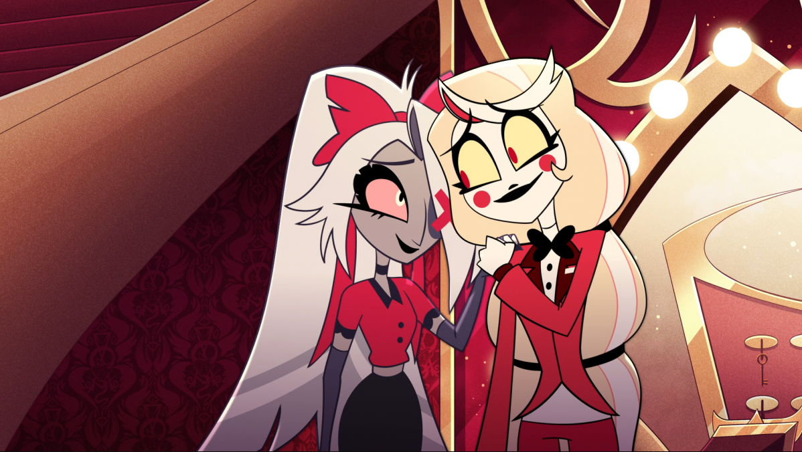
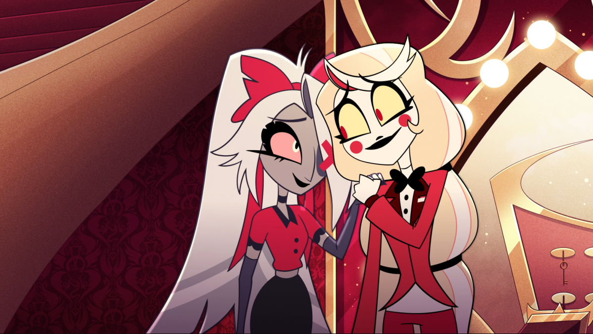

⛧ Vaggie je padlý anděl a bývalá Exorcistka (jednoduše masové vraždění duší v Pekle). Společně se svou přítelkyní Charlie pracuje v Hazbin Hotelu a dohlíží na jeho provoz. Je velmi zručná v boji a snaží se svou přítelkyni chránit za každou cenu. Pod jejím nedostupným přístupem k ostatním se skrývá srdce ze zlata, které ukáže jen málokomu.
 
